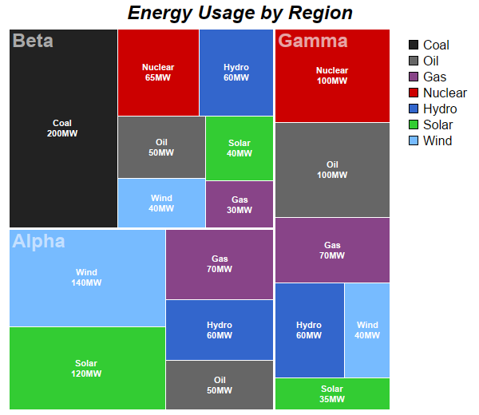

This example demonstrates an alternative color scheme for multi-level tree maps.
In the Multi Level Tree Map example, the colors are based on the first level nodes. This example demonstrates how to color based on second level nodes.
ChartDirector 7.1 (C++ Edition)
Tree Map Colors

Source Code Listing
#include "chartdir.h"
int main(int argc, char *argv[])
{
// The first level nodes of the tree map. There are 3 nodes.
const char* allRegions[] = {"Alpha", "Beta", "Gamma"};
const int allRegions_size = (int)(sizeof(allRegions)/sizeof(*allRegions));
// Each first level node branches to become 7 second level nodes.
const char* energy_types[] = {"Coal", "Oil", "Gas", "Nuclear", "Hydro", "Solar", "Wind"};
const int energy_types_size = (int)(sizeof(energy_types)/sizeof(*energy_types));
// Colors for the second level nodes.
int colors[] = {0x222222, 0x666666, 0x884488, 0xcc0000, 0x3366cc, 0x33cc33, 0x77bbff};
const int colors_size = (int)(sizeof(colors)/sizeof(*colors));
// The data for the 3 groups of second level nodes
double region0[] = {0, 50, 70, 0, 60, 120, 140};
const int region0_size = (int)(sizeof(region0)/sizeof(*region0));
double region1[] = {200, 50, 30, 65, 60, 40, 40};
const int region1_size = (int)(sizeof(region1)/sizeof(*region1));
double region2[] = {0, 100, 70, 100, 60, 35, 40};
const int region2_size = (int)(sizeof(region2)/sizeof(*region2));
// Create a Tree Map object of size 600 x 520 pixels
TreeMapChart* c = new TreeMapChart(600, 520);
// Add a title to the chart
c->addTitle("Energy Usage by Region", "Arial Bold Italic", 18);
// Set the plotarea at (10, 35) and of size 480 x 480 pixels
c->setPlotArea(10, 35, 480, 480);
// Obtain the root of the tree map, which is the entire plot area
TreeMapNode* root = c->getRootNode();
// Add first level nodes to the root. We do not need to provide data as they will be computed as
// the sum of the second level nodes.
root->setData(DoubleArray(), StringArray(allRegions, allRegions_size));
// Add second level nodes to each of the first level node
root->getNode(0)->setData(DoubleArray(region0, region0_size), StringArray(energy_types,
energy_types_size), IntArray(colors, colors_size));
root->getNode(1)->setData(DoubleArray(region1, region1_size), StringArray(energy_types,
energy_types_size), IntArray(colors, colors_size));
root->getNode(2)->setData(DoubleArray(region2, region2_size), StringArray(energy_types,
energy_types_size), IntArray(colors, colors_size));
// Get the prototype (template) for the first level nodes.
TreeMapNode* nodeConfig = c->getLevelPrototype(1);
// Set the label format for the nodes to show the label with 8pt Arial Bold font in
// semi-transparent black color (0x77000000). Put the text at the top left corner of the cell.
nodeConfig->setLabelFormat("{label}", "Arial Bold", 18, 0x77ffffff, Chart::TopLeft);
// Set the border color to white (ffffff). Use 2 pixel thick flat border style.
nodeConfig->setColors(-1, 0xffffff, Chart::flatBorder(2));
// Get the prototype (template) for the second level nodes.
TreeMapNode* nodeConfig2 = c->getLevelPrototype(2);
// Set the label format for the nodes to show the label and value with 8pt Arial Bold font. Put
// the text at the center of the cell.
nodeConfig2->setLabelFormat("{label}<*br*>{value}MW", "Arial Bold", 8, 0xffffff, Chart::Center);
// Set the border color to white (ffffff)
nodeConfig2->setColors(-1, 0xffffff);
// Add a legend box at (500, 35) with 12pt Arial font and transparent background and border.
LegendBox* b = c->addLegend(500, 35, true, "Arial", 12);
b->setBackground(Chart::Transparent, Chart::Transparent);
// Add the legend keys for the colors
for(int i = 0; i < energy_types_size; ++i) {
b->addKey(energy_types[i], colors[i]);
}
// Output the chart
c->makeChart("treemapcolors.png");
//free up resources
delete c;
return 0;
}